| 1. ¿Qué es el Business OS? |
| 2. Instalación y arranque |
| 3. Encender el sistema (el onboarding) |
| 4. La barra JARVIS — órdenes con texto o voz |
| 5. Los 12 módulos de la consola, uno por uno |
| 6. El agente de Telegram (agent-server) |
| 7. Mission Control y Finance OS |
| 8. Integraciones opcionales pendientes de credenciales |
| 9. Problemas comunes y su solución |
El Business OS es un sistema operativo para tu negocio: un cerebro de inteligencia artificial que conoce tu empresa, responde con datos reales, propone decisiones, ejecuta tareas aprobadas y trabaja solo en horarios programados. Le hablas en español normal — por la consola web, por Telegram o por voz.
Llega APAGADO a propósito: es un "Ferrari esperando piloto", sin idea de negocio fija. Se enciende con una entrevista (capítulo 3) que lo configura para TU empresa — cualquier giro, cualquier tamaño.
| Capa | Qué es | Dónde vive |
|---|---|---|
| 1 · Contexto | La verdad del negocio: identidad, estrategia, reglas de oro, aprendizajes | Carpeta context/ |
| 2 · Datos | Mapa de qué está conectado y dónde consultar cada dato | context/03_DATOS.md |
| 3 · Cerebro | Enterprise Brain: 9 agentes especializados + motores de decisión sobre Postgres | business-os/ — la consola JARVIS |
| 4 · Automatización | Agente con memoria, crons programados y bot de Telegram | agent-server/ |
| 5 · Build | Con las capas anteriores vivas, construyes SOBRE el negocio | Tus proyectos |
ENCENDIDO.md en la raíz del repo es la guía de arranque del piloto, y docs/SETUP_PROMPT.md el setup técnico guiado. Este manual los complementa con el "para qué sirve" de cada pieza.
cd business-os cp .env.example .env.local # rellena DATABASE_URL (Neon) y OPENROUTER_API_KEY npm install npm run db:setup # crea el esquema y siembra los 9 agentes npm run dev # → http://localhost:3010
La primera compilación puede tardar 2–3 minutos. Espera a que la terminal diga Ready.
cd business-os npm run bot
Es la consola en tu bolsillo vía Telegram, y su "latido" enciende en cian el indicador "Bot + Scheduler + Centinela" del módulo Gobierno. Necesita TELEGRAM_BOT_TOKEN propio en .env.local.
cd agent-server cp .env.example .env # rellena TELEGRAM_BOT_TOKEN y ALLOWED_CHAT_ID npm install npm run dev
Mientras context/00_EMPRESA.md contenga marcadores {{ASI:...}}, el sistema está APAGADO: funciona, pero razona en genérico. Hay dos llaves de encendido complementarias:
| Llave | Qué enciende | Cómo se usa |
|---|---|---|
Skill onboarding-empresa | La capa de contexto (capas 1–2) y los crons del agente | Abre Claude Code en la raíz del repo y di "enciende el sistema". Te entrevista por bloques y rellena context/*.md |
| Onboarding Ingestor (módulo 12 de la consola) | El cerebro (capa 3): constitución, entidades, KPIs y automatizaciones | Desde la consola, responde la entrevista guiada (20–30 min, se puede pausar) |
El orden recomendado es el de la tabla. Al terminar ambas, el sistema queda ENCENDIDO para tu negocio y los crons pueden sembrarse (capítulo 6).
La franja superior JARVIS ▸ está presente en todos los módulos de la consola. Escribe una orden en español y pulsa EJECUTAR (o Enter). El sistema decide solo si es una pregunta, un registro de datos, una regla de vigilancia o una tarea.
Ctrl+J): dicta una orden suelta.Se navega con la barra lateral izquierda; el punto cian inferior indica que la consola está en línea. Colores del tema: cian = correcto, ámbar = pendiente/aviso, rojo = crítico.
La pantalla principal: la esfera holográfica, los contadores del sistema y la fundación del OS.
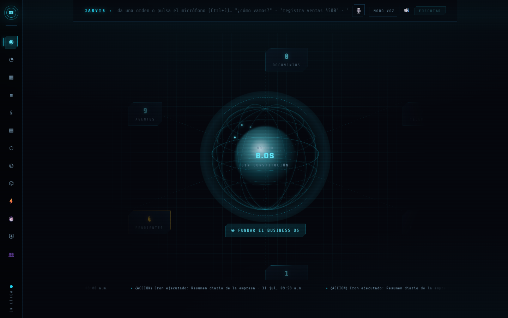
Recién instalado: la esfera "SIN CONSTITUCIÓN" y el botón FUNDAR EL BUSINESS OS — así se ve el estado APAGADO.
Cómo usarlo: es tu punto de partida. La primera vez, pulsa FUNDAR EL BUSINESS OS (te lleva al onboarding). Ya encendido, la esfera muestra el pulso del negocio y el ticker inferior la actividad reciente.
"Nueve especialistas. Un solo cerebro. Todos conocen toda la empresa."
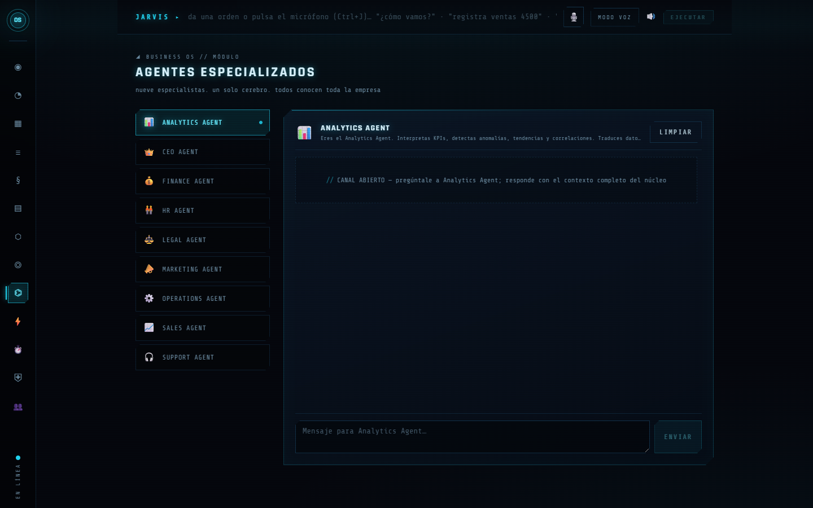
El equipo directivo virtual: CEO, Finanzas, RRHH, Ventas, Operaciones, Marketing, Legal, Soporte y Analytics.
Para qué sirve: hablar con un director virtual del área que necesites. Cada agente responde desde su especialidad pero con el cerebro común: Finanzas sabe lo que pasó en Ventas.
Cómo usarlo: elige un agente y conversa. Al CFO: "¿aguantamos 6 meses con la caja actual?"; a Legal: "redacta una cláusula de confidencialidad" (siempre con revisión humana).
"No responde: piensa. Analiza ventas, caja, capacidad, riesgos e historial antes de recomendar."
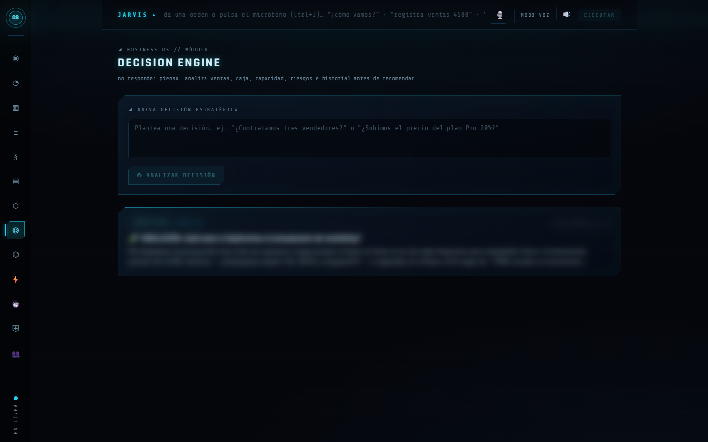
Cada decisión queda registrada con su análisis y recomendación.
Cómo usarlo: plantea la decisión ("¿contrato o subcontrato?", "¿subo precios 10%?"). Recibes análisis, opciones y recomendación argumentada. La decisión final es tuya y queda archivada.
"Los signos vitales de la empresa — el núcleo los usa en cada decisión y el Centinela los vigila por umbral."
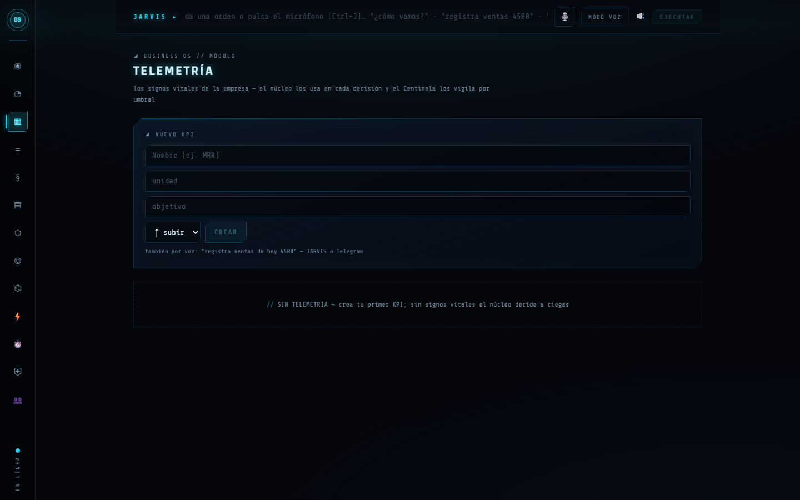
Los indicadores clave, con su historial.
Cómo usarlo: registra valores por la barra ("registra ventas de hoy 4500"), por el módulo o por Telegram. El Centinela vigila umbrales: "si las ventas semanales bajan de X, avísame".
"El mapa vivo: personas, clientes, productos, proyectos, procesos, contratos… el núcleo razona sobre este modelo."
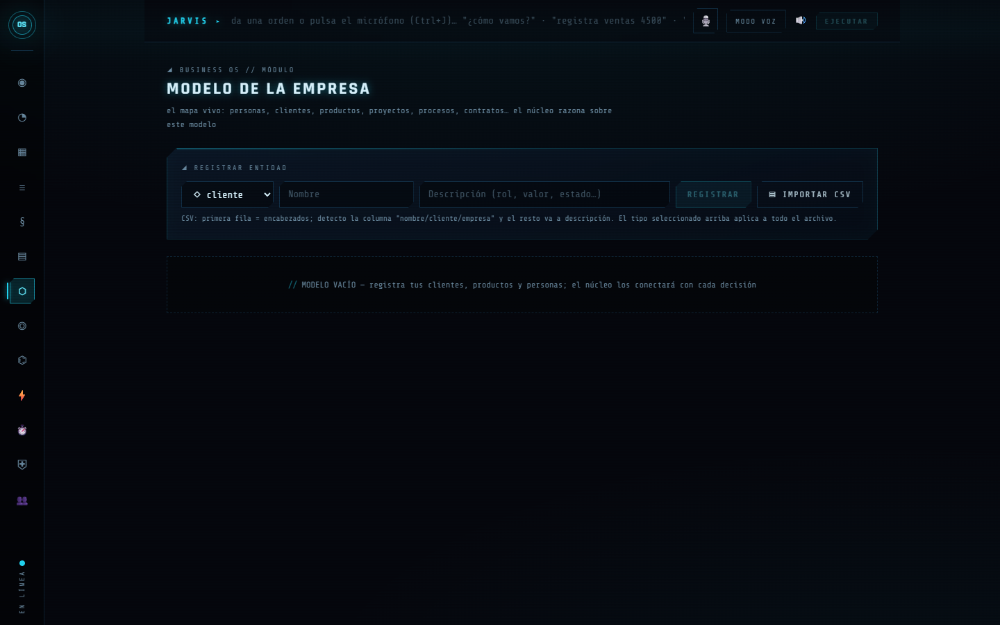
El grafo de entidades: quién es quién y qué se relaciona con qué.
Cómo usarlo: díselo en natural — "Juan trabaja en el Proyecto Alfa" — por JARVIS o Telegram, y el grafo se conecta solo.
"Todo lo que ingresa se convierte en conocimiento del núcleo: texto, notas, contratos, reportes, exportes CSV…"
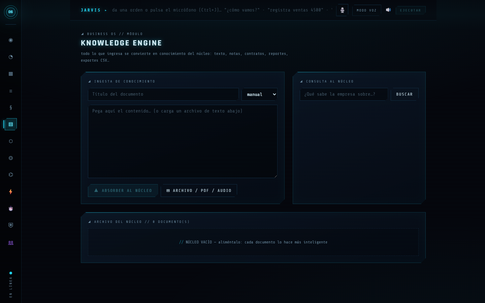
La biblioteca del cerebro.
Cómo usarlo: pega texto o sube archivos. Luego pregunta con normalidad: "¿qué dice el contrato de X sobre la renovación?".
"Cola de acciones: el sistema propone, tú apruebas, el motor ejecuta. Emails, reportes, briefs, convocatorias…"
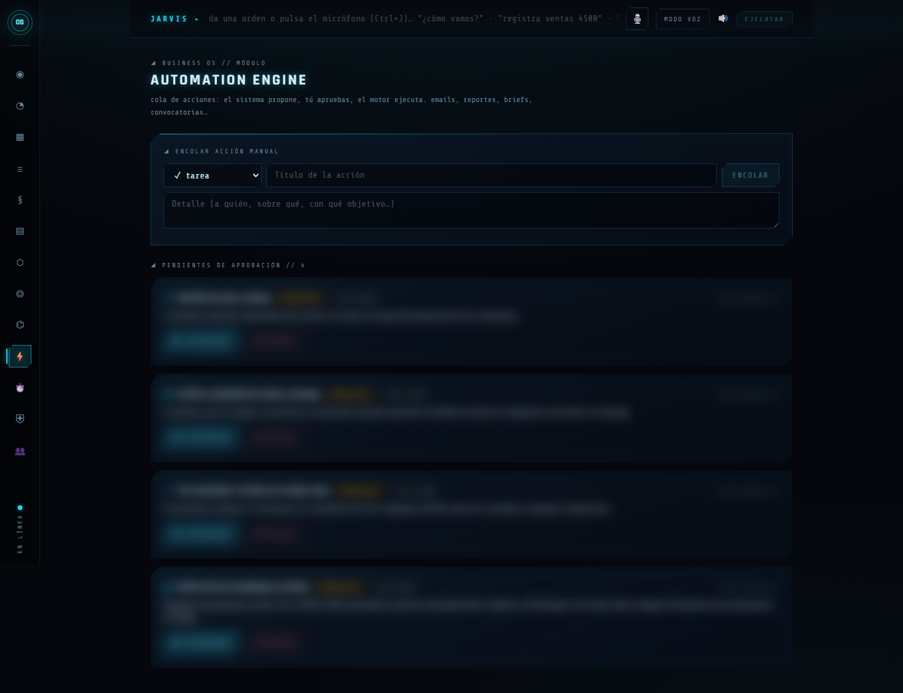
La cola de trabajo con el estado de cada acción.
Cómo usarlo: revisa y aprueba o rechaza. En Gobierno defines qué tipos se auto-ejecutan y cuáles siempre esperan tu visto bueno. Nada crítico sale sin aprobación.
"El gerente da instrucciones, el Business OS ejecuta."
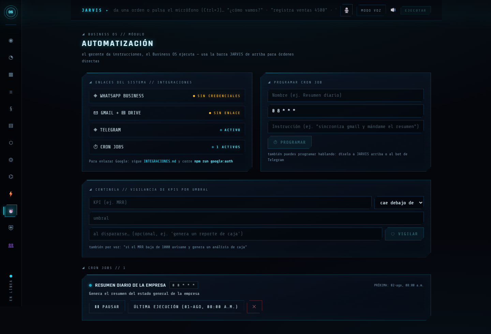
Instrucciones programadas y reglas del Centinela.
Cómo usarlo: crea programaciones hablando — "todos los lunes a las 8 prepárame el resumen financiero". Aquí las ves, pausas o eliminas.
"Salud del sistema, políticas de ejecución y auditoría inmutable — nada falla en silencio, nada crítico sin tu aprobación."
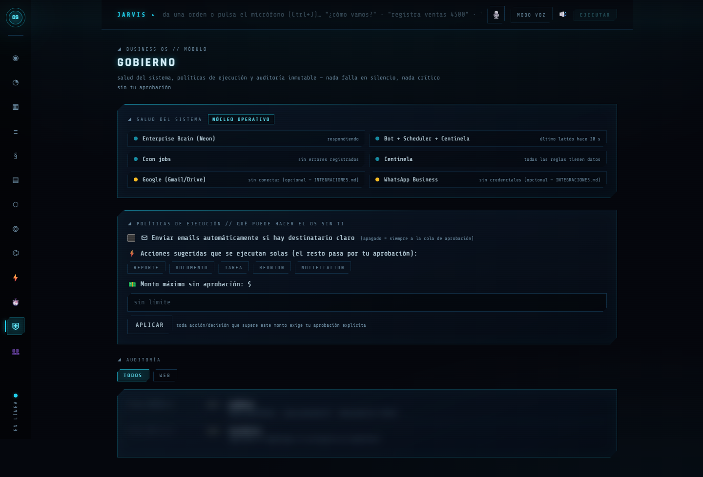
Semáforo de salud, políticas de autonomía y registro de auditoría.
npm run bot (capítulo 2)."Por seguridad, el sistema asume que eres el único operador salvo que actives el modo Multi-Empleado."
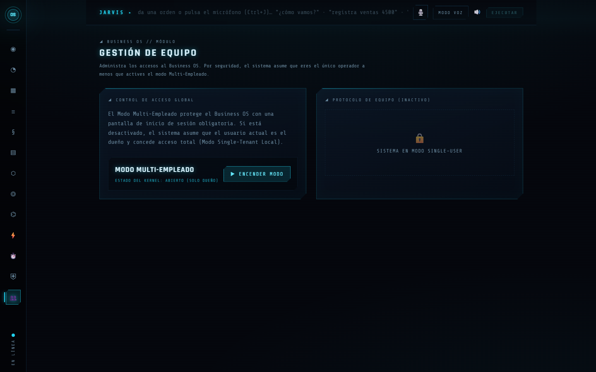
Control de operadores del sistema.
Para qué sirve: el OS nace de un solo piloto. Cuando quieras dar acceso a tu equipo, aquí se activa el modo Multi-Empleado.
"Horas y dinero que el Business OS le devuelve a la empresa — estimaciones conservadoras y declaradas, no promesas."
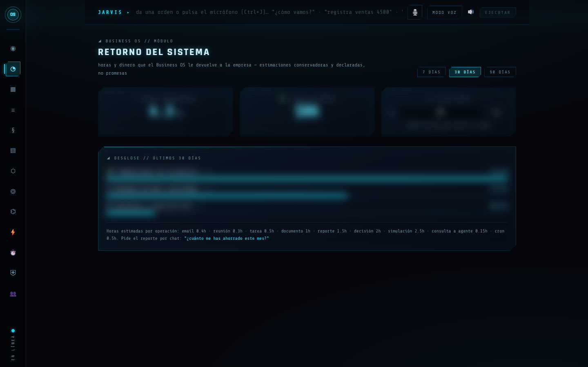
Cuánto tiempo y dinero te ha ahorrado el sistema.
Cómo usarlo: entra de vez en cuando, o pregunta por chat: "¿cuánto me has ahorrado este mes?".
"El Business OS te entrevista y construye solo el gemelo digital de tu empresa: constitución, entidades, KPIs y automatizaciones."
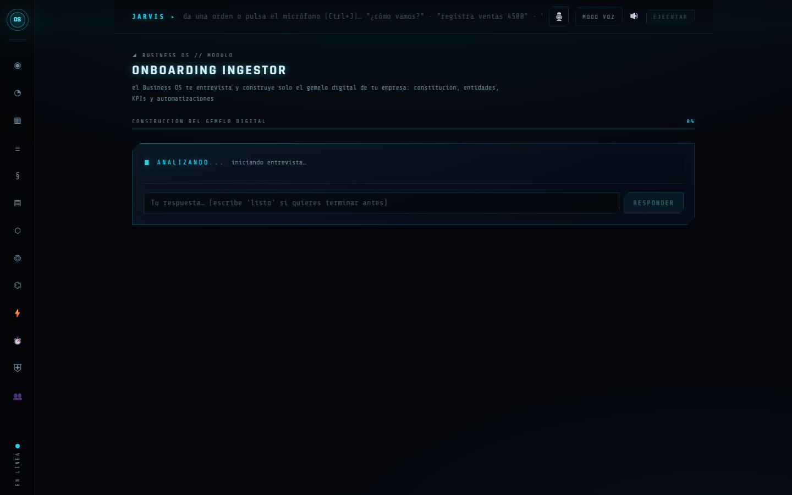
La entrevista de encendido del cerebro.
Cómo usarlo: resérvale 20–30 minutos. Puedes pausar y continuar. Al terminar, el cerebro queda ENCENDIDO para tu negocio (ver capítulo 3).
Además de la consola, el repo trae un agente persistente que corre en tu máquina: no es un chatbot — cada mensaje tuyo lanza el Claude Code real con tus skills y tu contexto. Le hablas por Telegram desde cualquier lugar.
/memory muestra qué recuerda, /forget lo olvida.cd agent-server npx tsx scripts/seed-crons.ts # siembra los 16 crons del archivo automations/cronjobs-seed.json npx tsx src/schedule-cli.ts list # verlos · pause/resume <id> para controlarlos
/newchat (conversación nueva), /schedule (ver crons), /chatid (tu ID para el .env).npx tsx scripts/status.ts dentro de agent-server te dice qué está configurado y qué falta, con indicadores claros.
Dos dashboards opcionales incluidos en el repo. Ambos usan Supabase (crea un proyecto gratis y sigue docs/SETUP_PROMPT.md, secciones 3A y 3B, para crear sus tablas).
| App | Qué es | Arranque |
|---|---|---|
| Mission Control | Tablero Kanban de tareas + chat con el agente + gestión de crons + calendario. Instalable como app en el celular (PWA) | cd Mission-Control && npm install && npm run dev → puerto 3000 |
| Finance OS | Finanzas: transacciones, gastos recurrentes, reportes y un agente CFO | cd finance-os && npm install && npm run dev |
El código de estas integraciones ya está en el repo; solo esperan que pongas tus propias credenciales. El módulo Gobierno las marca en ámbar — no son fallas.
| Integración | Qué necesitas | Qué desbloquea |
|---|---|---|
| Google (Gmail/Drive) | Credenciales OAuth propias — guía paso a paso en business-os/INTEGRACIONES.md | Resumen de inbox, agenda, importar Docs al cerebro |
| WhatsApp Business | App en Meta + verificación de negocio + credenciales Cloud API | Dar órdenes al OS por WhatsApp |
| Voz del agente | GROQ_API_KEY (gratis) y ELEVENLABS_API_KEY (nivel gratis) | Notas de voz de entrada y respuestas habladas en Telegram |
| Stripe / fuente de ingresos | Cuenta y claves | Que los crons financieros reporten MRR/ingresos reales |
| Síntoma | Causa probable | Solución |
|---|---|---|
| El navegador se queda cargando | El servidor no terminó de compilar o no está corriendo | Mira la terminal: espera el Ready o arranca la app (capítulo 2) |
| "Telegram rechazó el token" al arrancar el agente | TELEGRAM_BOT_TOKEN sigue siendo el de ejemplo o es inválido | Crea tu bot con @BotFather y pega el token en agent-server/.env |
| "Bot + Scheduler + Centinela" en rojo en Gobierno | No está corriendo npm run bot | Arrancarlo; en un minuto el indicador se enciende |
| Los dos bots se roban los mensajes | El mismo token en agent-server y business-os | Un bot distinto (token distinto) para cada uno |
| El agente responde con error de límite | Se agotó la cuota de Claude | Esperar el restablecimiento; los crons reintentan solos con espera |
| El bot mezcla temas viejos | Sesión acumulada | Envíale /newchat |
| Mission Control / Finance OS no cargan datos | Supabase sin configurar o proyecto suspendido | Capítulo 7 — crear/reactivar proyecto y actualizar claves |
| Primera carga lentísima | Compilación inicial de Next.js | Normal la primera vez; después vuela |
taskkill /IM node.exe /F. Mata TODOS los procesos de Node de la máquina. Cierra cada terminal con Ctrl+C.
Business OS · Manual de usuario · github.com/makeflowia-lab/business-os · Las capturas muestran el sistema recién instalado (estado APAGADO), tal como lo verás antes del onboarding.